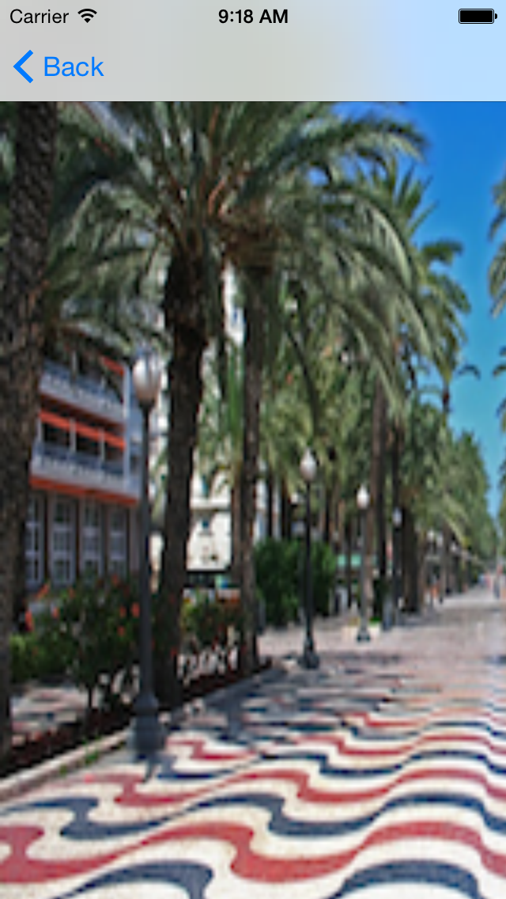
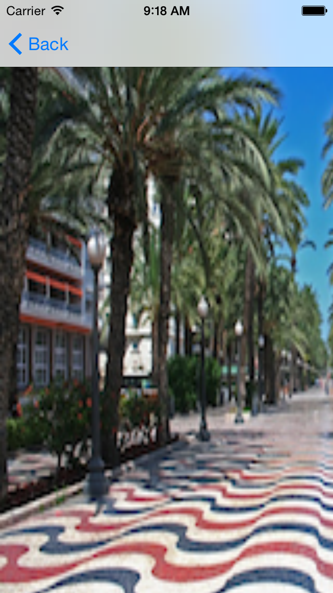

Práctica 2: Mapas y localización¶
Parte obligatoria (hasta 7 puntos)¶
-
Lee los siguientes apartados de los apuntes de teoría: desde Aspectos básicos de MapKit hasta Uso del delegado (incluido).
-
Debes crear la app
es.ua.mastermoviles.Mapas. -
Empieza por definir un View Controller en el que debes incluir un mapa centrado inicialmente en Alicante. Inclúyelo en un Navigation Controller con la opción Editor > Embed In > Navigation Controller.
-
Añade en el centro de la barra del Navigation Controller un Segmented Control con los valores
MapaySatélite, conéctalos con el ViewController y haz que el mapa cambie de tipo cuando se pulse en el control.

-
Lee los siguientes apartados apuntes de teoría: desde Anotaciones hasta Elementos en el callout (incluido).
-
En el Storyboard añade un
Bar Button Itemen la parte derecha de la barra de navegación. -
Llámalo
Piny enlázalo con una acción en elViewControllerque añada una anotación en el mapa.

-
Añade en los callouts imágenes thumbnails predefinidas, dependiendo de si el número de pin es par o impar.
-
Añade en los callouts el botón de información.

Parte opcional (3 puntos)¶
Parte opcional 1
- Implementa un segue que haga aparecer otra vista con un detalle
de la foto. Puedes definir un segue haciendo control click desde un
view controller hasta otro. Después debes dar un identificador al
segue. Por ejemplo
DetalleImagen.
 

Parte opcional 2
-
Lee los siguientes apartados de los apuntes de teoría: desde Geocoding hasta Conversión de placemarks en localizaciones (incluido).
-
Implementa una llamada al servicio de geolocalización que coloque como subtítulo del Pin el país en el que se ha colocado el mismo.

Parte opcional 3
-
Lee el siguiente apartado de los apuntes de teoría: Localización.
-
Añade el tracking de localización a la aplicación, imprimiendo la localización en la salida estándar cada 10 metros. Comprueba el funcionamiento activando la localización en el simulador.
-
Añade la localización al mapa, haciendo que aparezca en la parte izquierda de la barra de navegación el botón de navegación.
-
Cuando pulses el botón de navegación se debe mostrar la posición actual del dispositivo.
-
Deberás modificar la función que muestra la vista de una anotación (
mapView(_:viewFor:)) porque se utiliza también para mostrar la vista de la posición actual del dispositivo (que también es una anotación). Si la anotación que se quiere mostrar no es de tipo Pin debes poner la vista anilpara que se use la vista por defecto (el círculo).
-

- Comprime el proyecto y entrégalo en la entrega correspondiente de Moodle.